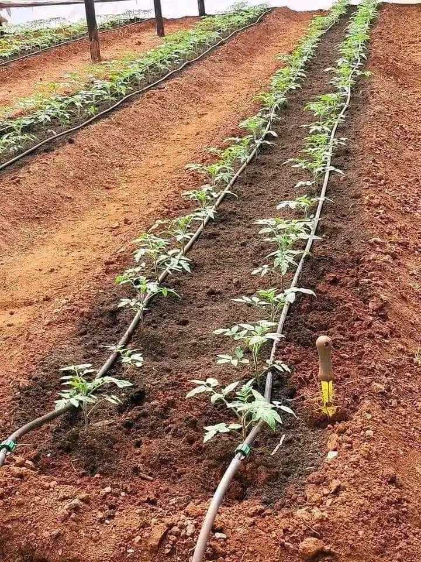
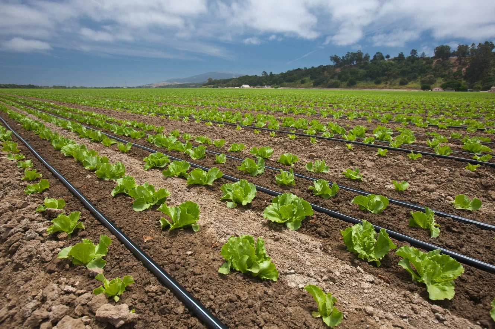
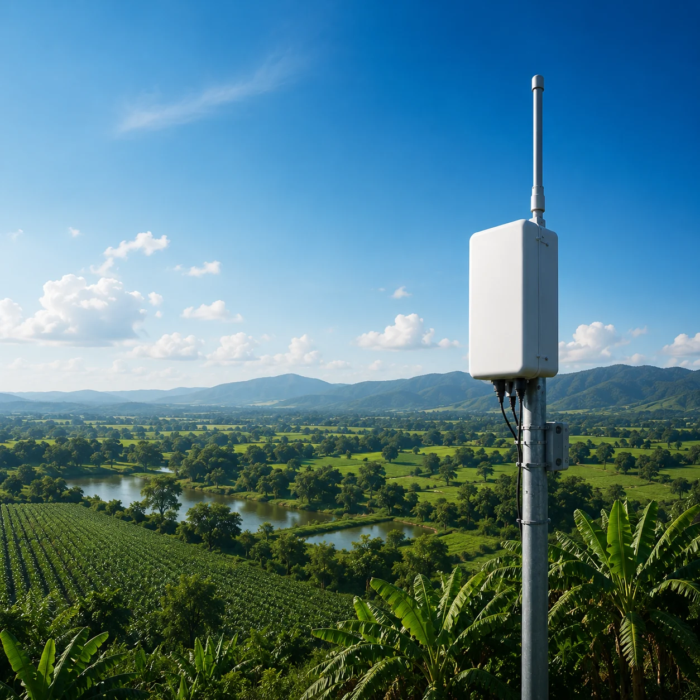
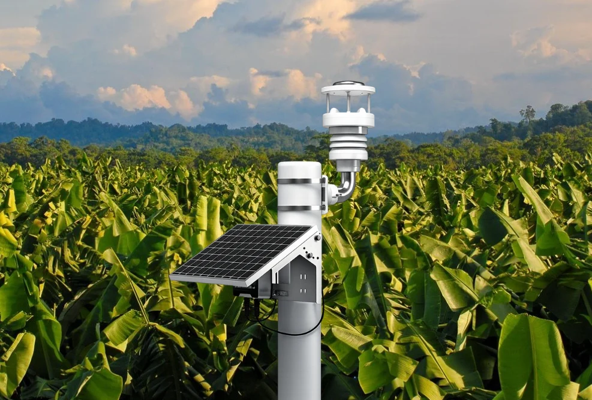
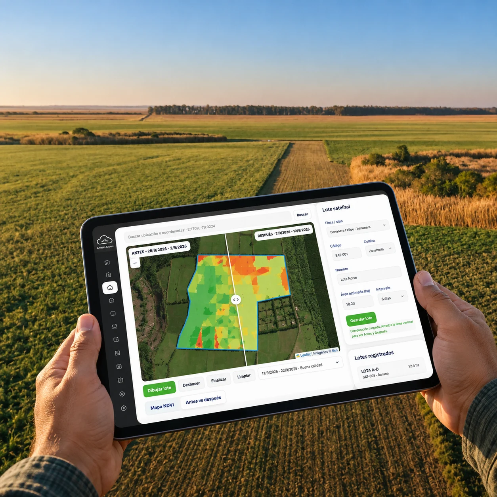
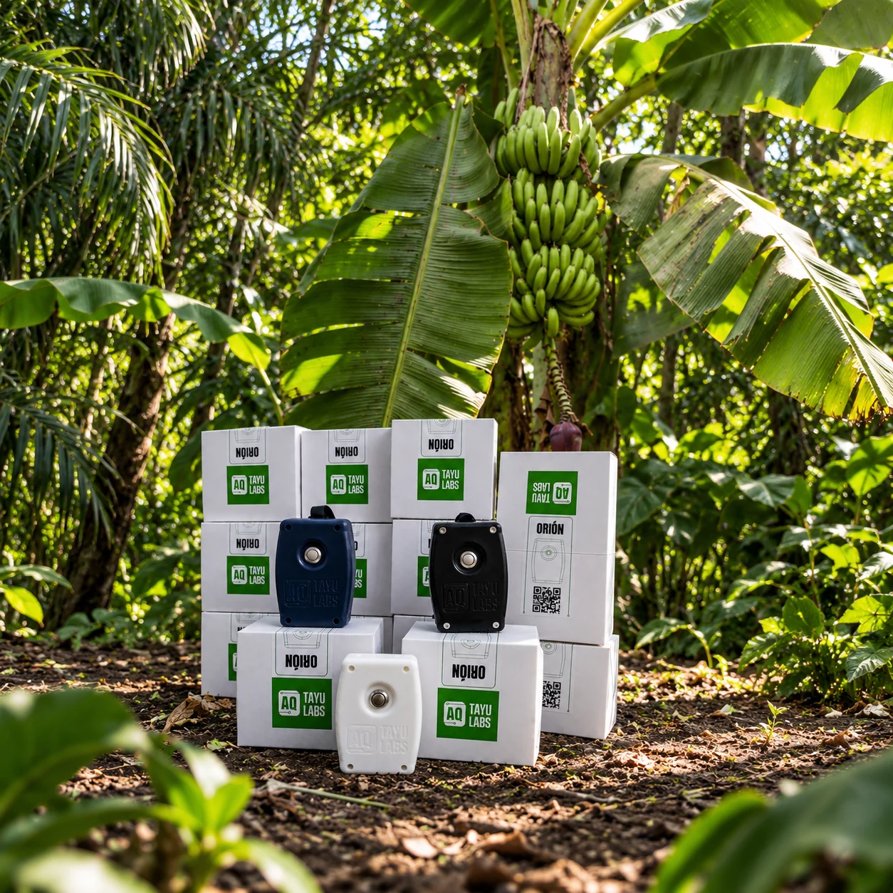
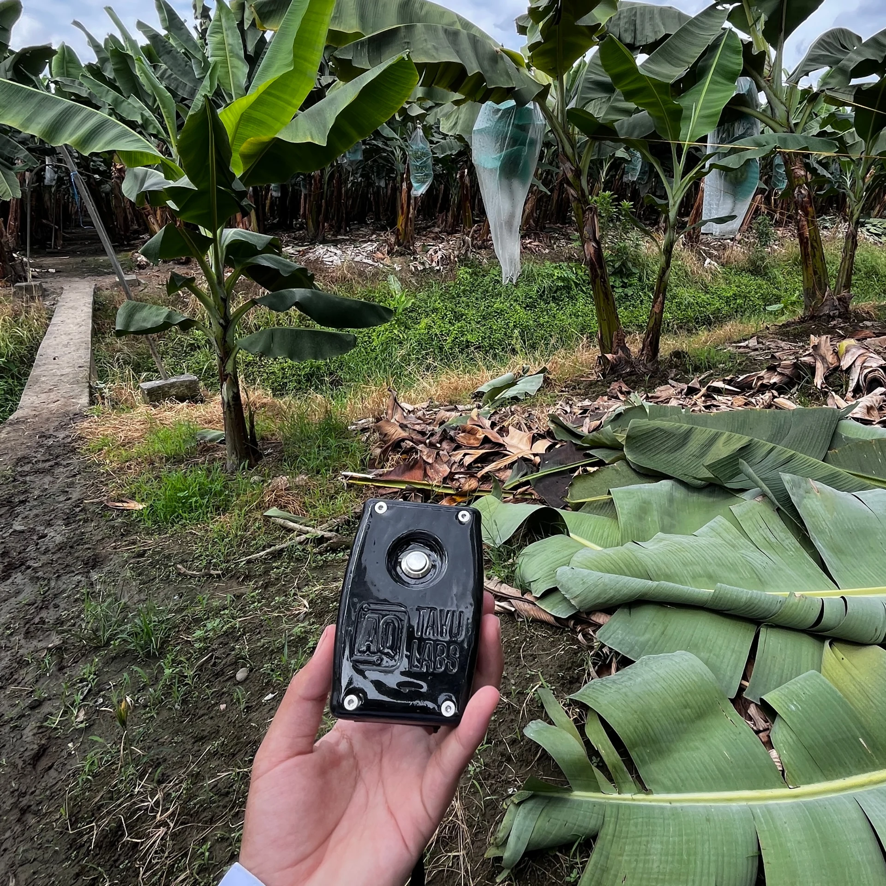
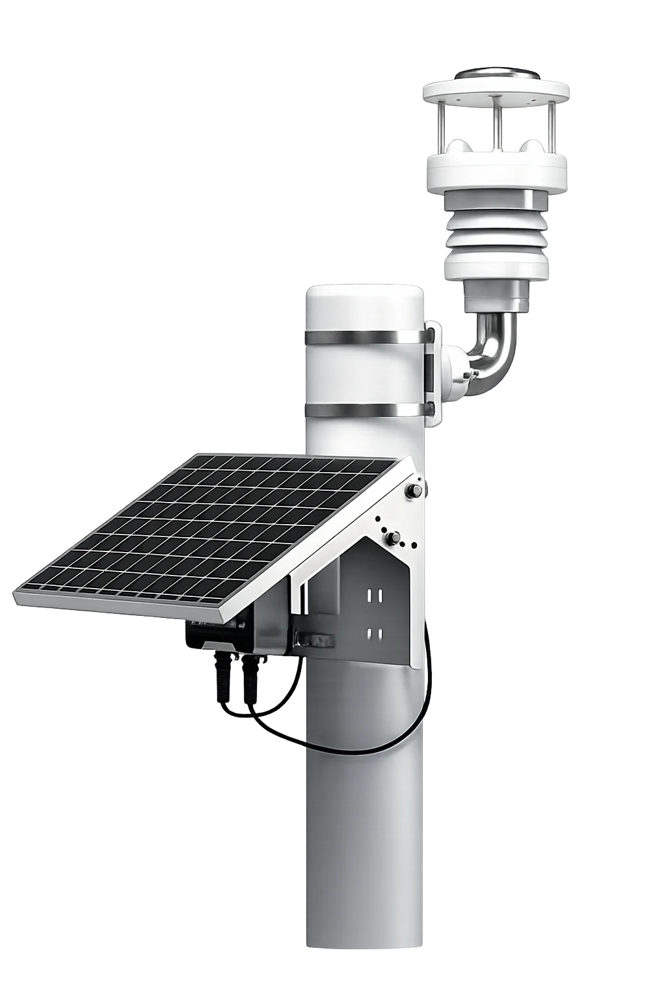

Automatización
Riego inteligente y automatizado
Programa, activa y supervisa bombas, válvulas y sistemas de riego de forma remota. Optimiza el uso del agua y consulta el estado de tus equipos desde Amelia Cloud.
Transforma tus operaciones agrícolas con tecnología IoT, automatización y monitoreo inteligente. Controla sistemas de riego, supervisa equipos a larga distancia y toma decisiones basadas en datos desde Amelia Cloud.

TAYULABS · Tecnología hecha en EcuadorDesde el control de riego hasta el análisis satelital de cultivos. Integramos sensores, dispositivos IoT y sistemas de automatización para que tengas mayor control sobre tus operaciones agrícolas desde una sola plataforma.

Programa, activa y supervisa bombas, válvulas y sistemas de riego de forma remota. Optimiza el uso del agua y consulta el estado de tus equipos desde Amelia Cloud.

Enciende, apaga y supervisa bombas, motores y equipos agrícolas mediante comunicación LoRaWAN. Conecta diferentes puntos de tu finca sin depender de redes Wi-Fi en toda la propiedad.

Supervisa los niveles de combustible de generadores, tanques y sistemas agrícolas. Consulta registros históricos y recibe alertas por niveles bajos desde Amelia Cloud.

Integra sensores y estaciones meteorológicas para registrar temperatura, humedad ambiental y otras variables climáticas. Consulta información histórica y conoce mejor las condiciones de tus cultivos.

Monitorea el consumo eléctrico de bombas, motores y sistemas de riego. Analiza registros de energía, identifica variaciones en el consumo y mejora la supervisión de tus instalaciones.

Monitorea la evolución de tus cultivos mediante imágenes satelitales e índices de vegetación como NDVI. Compara diferentes fechas, identifica cambios en el terreno y complementa tus decisiones agrícolas desde Amelia Cloud.
Integramos sensores, equipos agrícolas y dispositivos IoT mediante tecnología LoRaWAN para llevar la información de tu finca hasta Amelia Cloud. Desde una sola plataforma puedes visualizar mediciones, supervisar equipos, consultar históricos y configurar alertas según las necesidades de tu operación.

Desarrollamos soluciones tecnológicas adaptadas a las necesidades del sector agrícola. Desde dispositivos de trazabilidad hasta sistemas de monitoreo y automatización, conectamos las operaciones del campo con información digital.


Sí. Podemos evaluar tu infraestructura actual e integrar dispositivos de control, sensores y automatización compatibles con tus bombas, válvulas y equipos existentes. La solución se adapta a las condiciones técnicas de cada instalación.
No necesariamente. Utilizamos tecnología LoRaWAN para transmitir información a largas distancias y conectar dispositivos de campo. El alcance depende del terreno, los obstáculos y la infraestructura de comunicación instalada.
Puedes consultar las variables que tengan sensores o equipos integrados, como temperatura, humedad, niveles de combustible, consumo eléctrico y estados de operación. También puedes acceder a históricos, alertas y funciones de control según la configuración.
Sí. Amelia Cloud incorpora herramientas de análisis satelital que permiten consultar información de vegetación, comparar fechas y realizar seguimiento de lotes agrícolas mediante índices como NDVI.